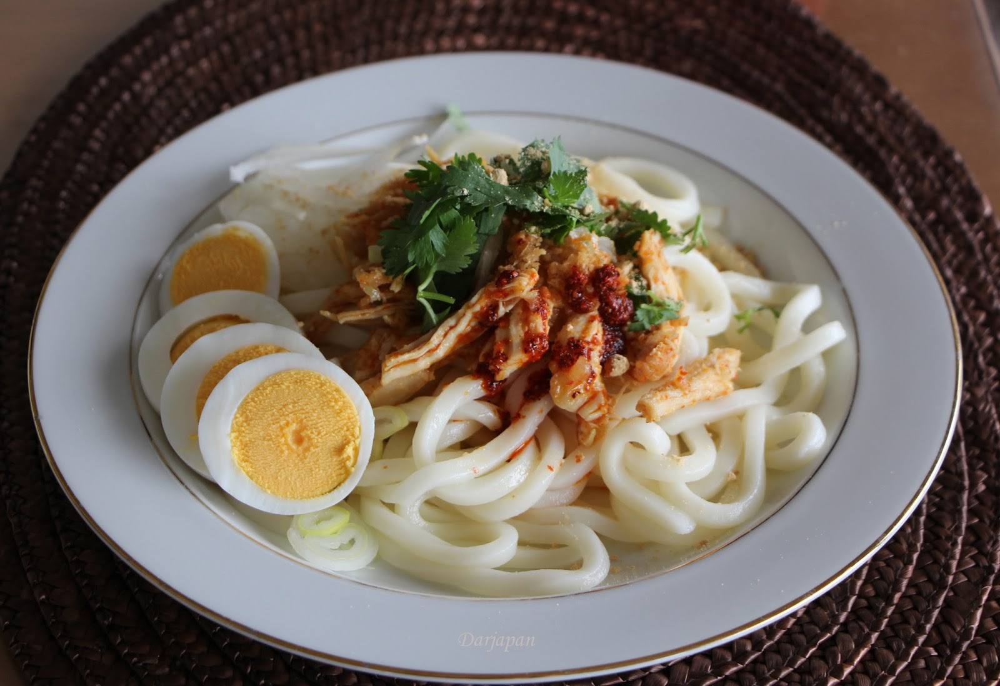

Nan Gyi Thoke
Return to home

Nan gyi thoke is an a thoke salad dish in Burmese cuisine, made with thick round rice noodles mixed with specially prepared chicken curry and chili oil.
Ingredients
- 800g thick rice noodles (fresh)
- 4 boiled eggs, sliced
- 1/4 cabbage, thinly sliced
- 2-3 shallots, thinly sliced
- 2-3 shallots, thinly sliced
- 30g besan flour, toasted
- Chilli oil
- 1 lime, wedges
- 1 bunch coriander, chopped
Steps
- Marinade the chicken thigh fillets in tumeric, sweet paprika powder and fish sauce.
- Prepare the salad toppings.
- Prepare the noodles.
- Toast the besan flour in a small pan on high heat, stirring until it smells fragrant and set aside.
- In a small bowl, place 1 tbsp of chilli powder.
- In a large saucepan, heat the peanut oil and sautee the onions and garlic until they start to caramelise at the edges.
- Add the marinated chicken and just enough water to immerse the chicken pieces to about three-quarters.
- Let it simmer for a further 10 minutes until cooked through and some of the oil starts to pool at the top.
- Place some noodles on a plate
- Top with a couple of spoonfuls of the chicken curry, some cabbage, onion, coriander, egg slices, a spoonful of besan flour, a spoonful of chilli oil and a dash of fish sauce.
- Garnish with fried onion and serve.
Home